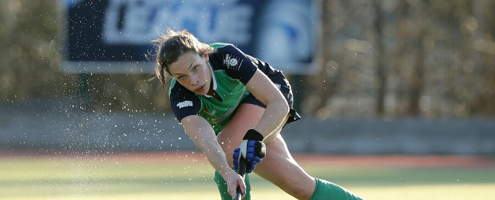

As a hockey player it's very important that you are continuously developing. This can be done through a number of ways including through visual learning and by bearing in mind a bit of sports psychology while planning your schedule. Below there is a video which

- Positive Image
- Focusing Before Matches
- Team Bonding
Having a positive mindset when going into a match or while carrying out a particular skill is proven to result in a better outcome. This means it's important to encouragingly before a game starts or when being tasked with a certain skill.
In order to optimise concentration during a match it's important for the team to collectively make an effort to focus. This is primarily done during the warm up by not talking off the topic of the match.
As a team it's important to be close as teamwork plays an important role in efficient gameplay. The best way to stay close as a team is to meet up outside of training and match time.